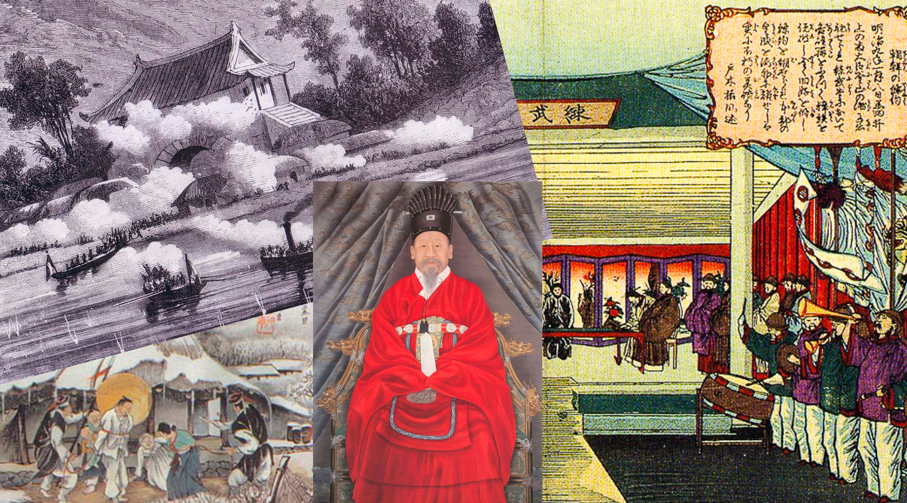

HISTORIA
Corea, situada en una gran península de la costa oriental de Asia, lleva habitada desde el neolítico. El primer estado político reconocible fue el Gojoseon en la segunda mitad del primer milenio a.C. A partir del siglo I a.C. hasta el siglo VII d.C., en el periodo de los Tres Reinos, la península estuvo dominada por los reinos de Baekje, Goguryeo y Silla, junto con la Confederación Gaya.
Silla, con una importante ayuda de China, acabaría conquistando el resto de los estados coreanos y formaría el Reino unificado de Silla, que gobernaría hasta el 935 d.C. A partir del siglo X d.C., la península estuvo gobernada por el reino Goryeo, hasta que las invasiones mongolas pusieron fin a la independencia de Corea en el siglo XIII d.C.
Para más información, visita el sitio oficial de Antigua Corea.
